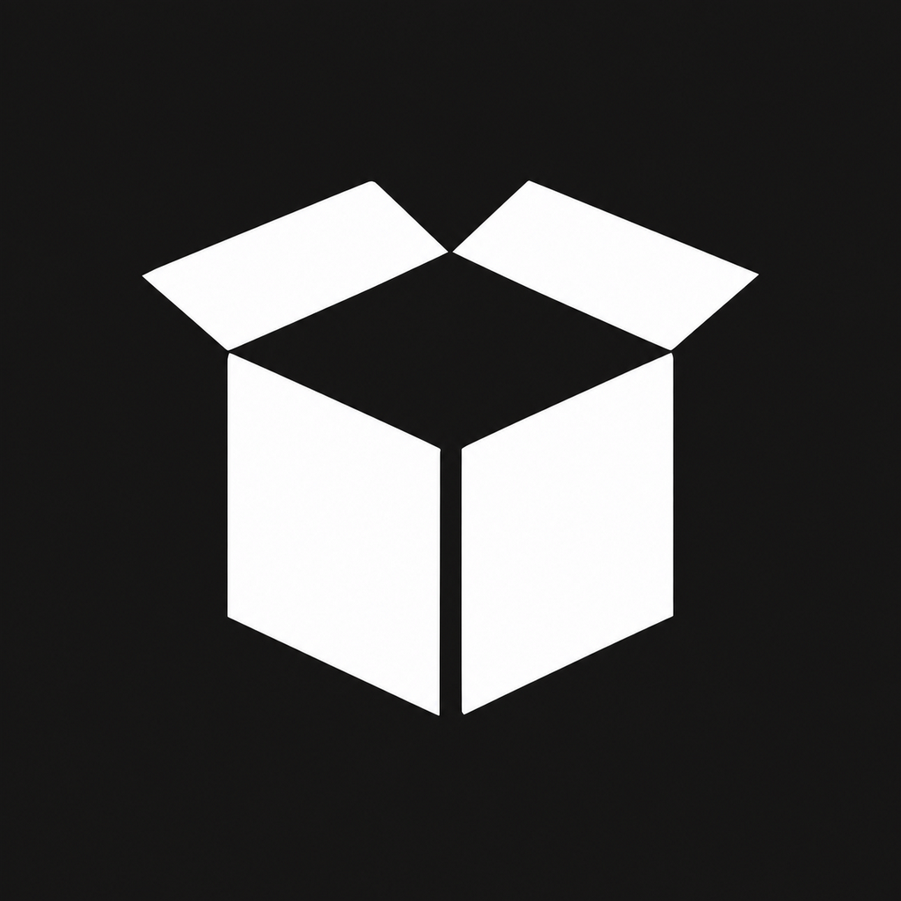
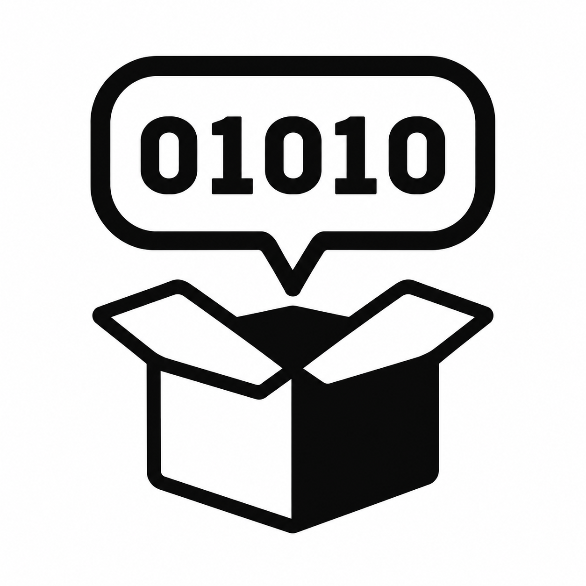
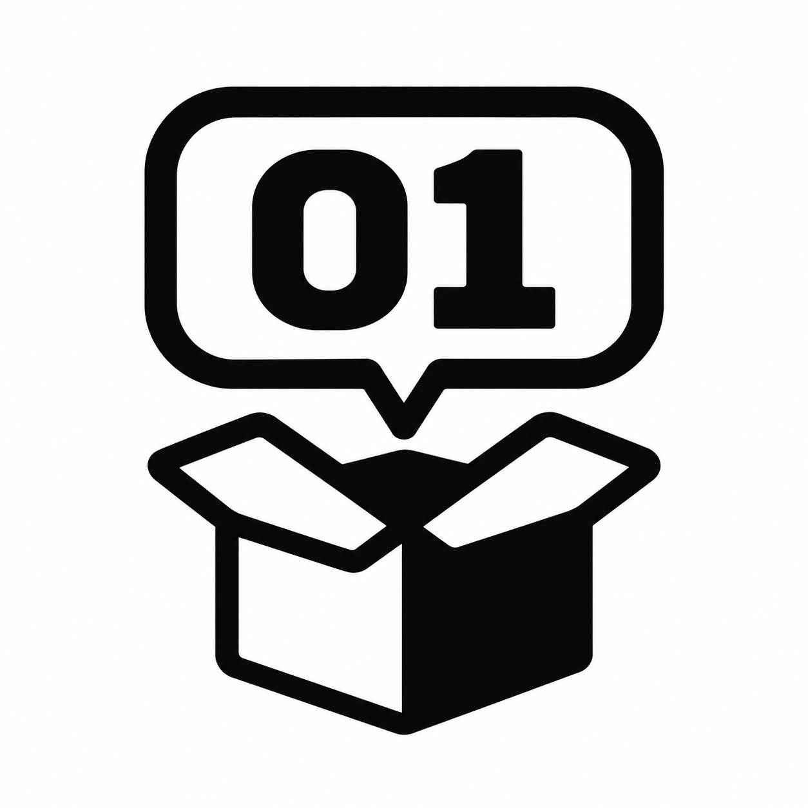

WHITEBOX / ICON REFINEMENT
상자와 코드, 더 단순하게
원본 PNG를 브라우저에서 16·20·24·32·48·64 CSS px로 표시한 비교입니다.
현재 아이콘
상자 중심의 기존 아이콘

밝은 배경
어두운 배경
일반용 · 01010
날개 2장 · 커진 말풍선 · 이진수 5자리

밝은 배경
어두운 배경
트레이용 · 01
두 자리 숫자 · 더 굵은 선

밝은 배경
어두운 배경
일반용은 01010을 유지하고, 작은 표시용은 01로 줄였습니다. 두 후보 모두 흰 배경의 PNG이며, 이 비교는 Windows 작업표시줄이나 트레이에 설치한 결과가 아닙니다.